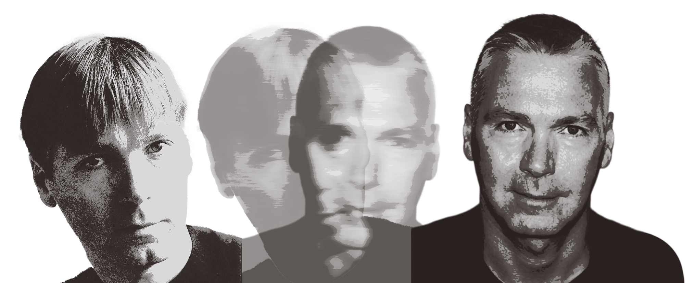
In 1982, the Royal Academy of Fine Arts in Antwerp unleashed a storm that would change fashion forever: the Antwerp Six. Among them was Dirk Bikkembergs, a man who entered the Academy with absolutely no fashion background whatsoever but a restless hunger to create something beautiful. His vision was simple: «Nike, Bruce Weber and Giorgio Armani. If you throw all three into a blender, that's my vision».
In 2021, Bikkembergs donated 58 iconic looks from his private archive to MoMu, a collection spanning from 1988 to 2012.
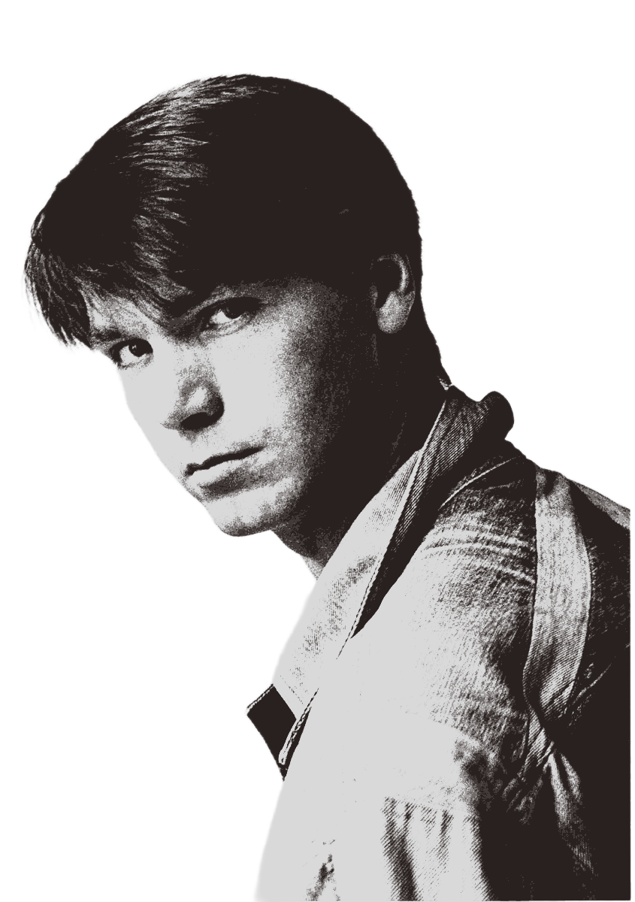
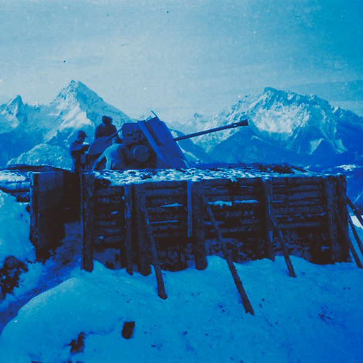
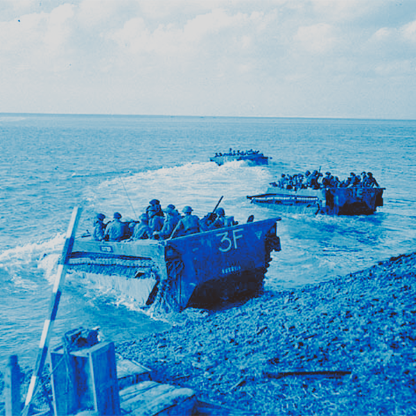
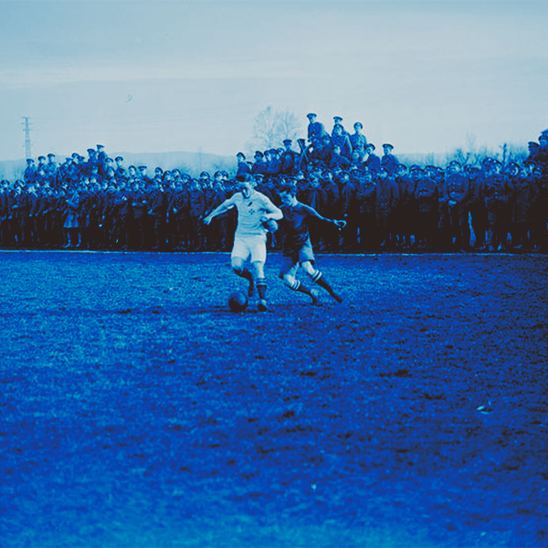
Born in Germany to a Belgian soldier who managed a weapon arsenal, Dirk grew up in a world of rigid discipline, yet his father would shed his uniform the moment he walked through the door to become a quiet thinker. Dirk eventually followed suit, completing his military service with the Royal Belgian Army. Here you can see some sketches he made during his time in the army, his mind was never truly on the barracks. Even while in uniform, he was already mentally drafting his future work. (to be adjusted - Hover over the images to see some of his sketches from during his military service.)
His early footwear, often thought to be purely military-inspired, was actually a sophisticated blend. While he drew from ceremonial military footwear to provide a robust" alternative to the slim Italian shoes of the 1980s, his most iconic mountain boots for the city were deeply rooted in the functional shapes of skiing and mountaineering gear. For Bikkembergs, the military wasn't about war—it was the truth of practical design.
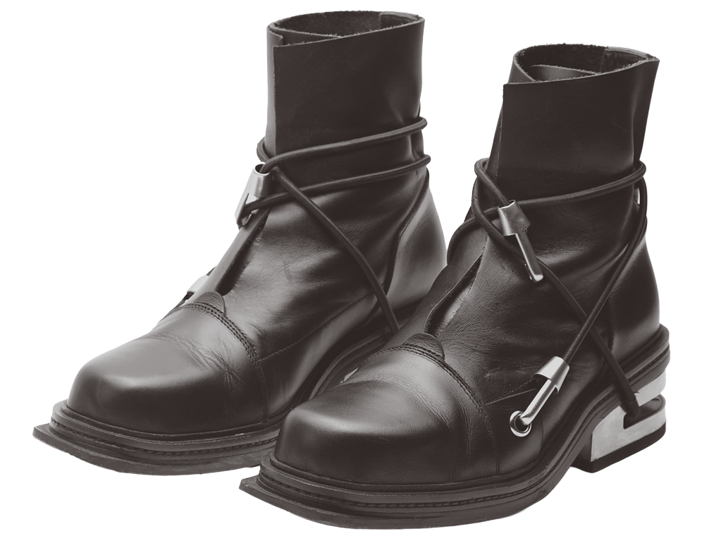
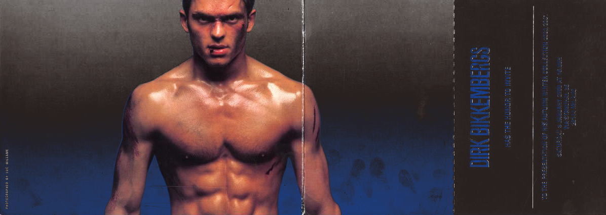
By January 1999, the tough and rough military aesthetic began to shift toward something more raw and personal. For his Autumn-Winter 00-01 show in Milan, Bikkembergs issued an invitation that was inspired by the movie Fight Club.
The image of a beaten, bruised man represents a transition in Dirk’s career and vision. The bruises evoke the external trauma of the Soldier, yet the context is now about the internal struggle and physical discipline of a man in the arena. Just like an athlete training for their sport. It isn't about war, it is about the "performative" nature of the body—the idea that putting on Bikkembergs’ clothes is like pulling on an extra layer of masculinity.
"Poor or rich doesn't matter much today! Only the deviant factor counts..." -Dirk Bikkembergs
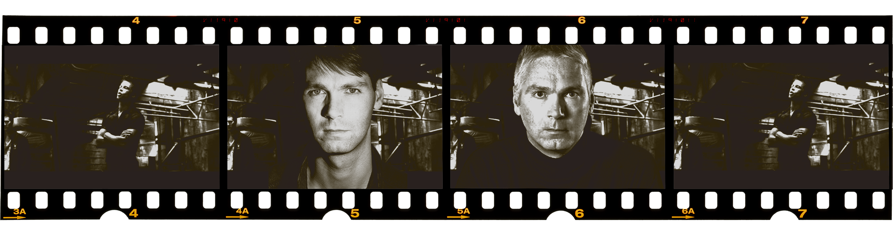
"You're not how much money you have in the bank, you're not your fucking khakis." -Tyler Durden
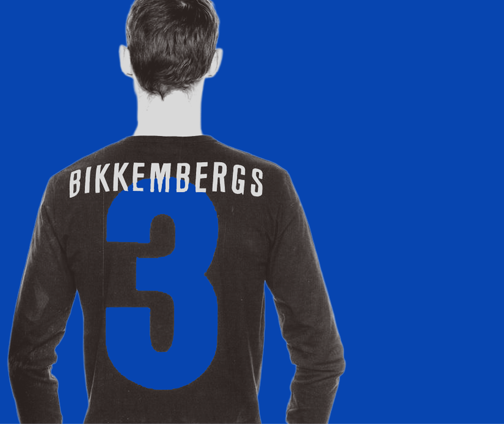
This exploration of raw masculinity led Dirk to the ultimate arena of discipline: Football. Shortly after this 1999 rebellion against ostentation, he famously walked into a meeting and placed a football on the table. He realized that youth culture had changed; instead of the spaced-out party animals of the 90s, young people wanted to be healthy, tanned, and disciplined. He saw the sportsman as the only muse who could make his clothes truly live, famously calling professional fashion models "dead meat”.
In June 2001, he took the international fashion elite to Milan’s San Siro football stadium, becoming the first designer to unite these diametrically opposed worlds.
He merged high-technology fabrics with the quality of high fashion, creating made-to-measure suits that offered the comfort of a jogging outfit.
He purchased FC Fossombrone, using the players as a living laboratory for testing technical performance and fabric technology.
He pioneered a jewel of fashion with better performance, it’s a shoe with fake cleats that became a staple for stars like Giorgio Chiellini.
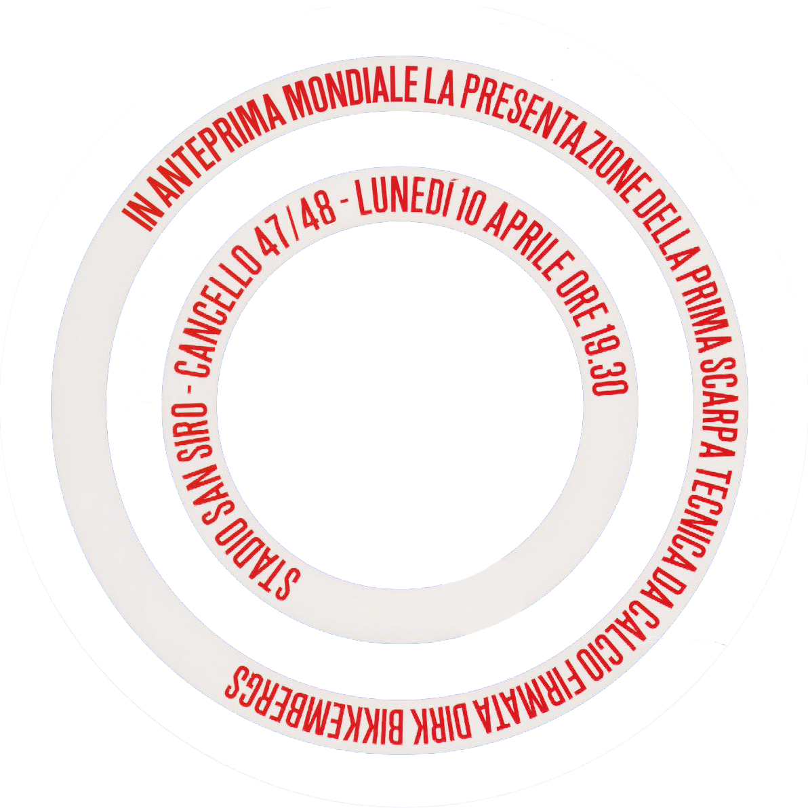
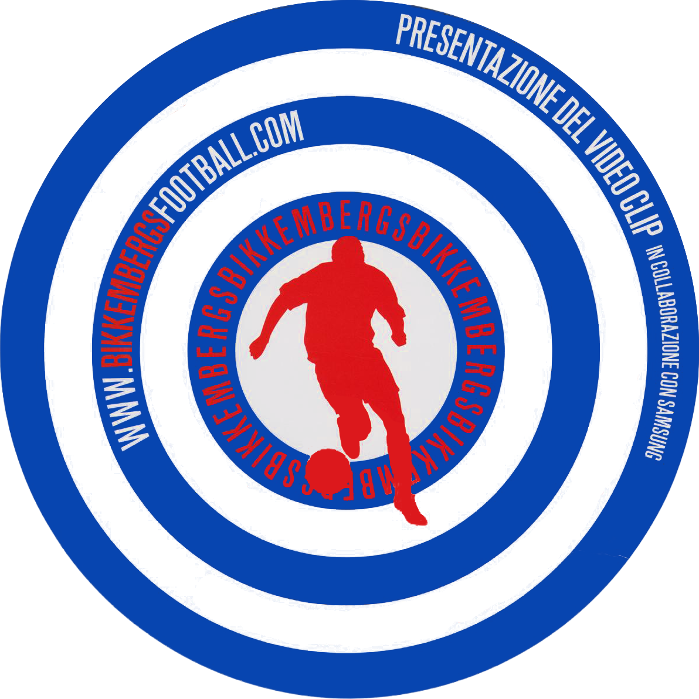
In 2011, Dirk Bikkembergs made a definitive exit from the fashion industry, selling his brands and turning his back on a system he felt had become a ruthless machine focused on turnover rather than beauty. Since then, he has embraced a life of total, minimalist freedom, claiming he has not even picked up a fashion magazine in over a decade. His personal existence is remarkably sober; he often lives out of a small suitcase and maintains a wardrobe only half a metre wide, consisting of just a few pairs of trousers and T-shirts.
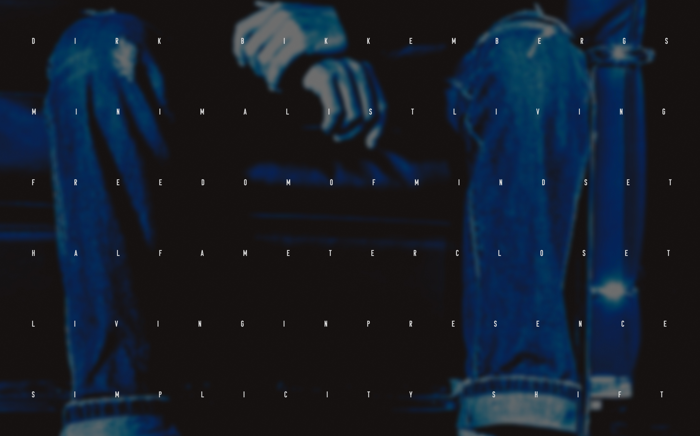
This shift towards simplicity is reflected in his current appreciation for the "just right" functionality of brands like Uniqlo. He finds more genuine satisfaction in seeing a regular person on the street wearing his designs than in trying to impress the fashion elite. He remains a profound optimist, living entirely in the present moment and moving forward with the conviction that once a page in his life is turned, it stays turned forever.